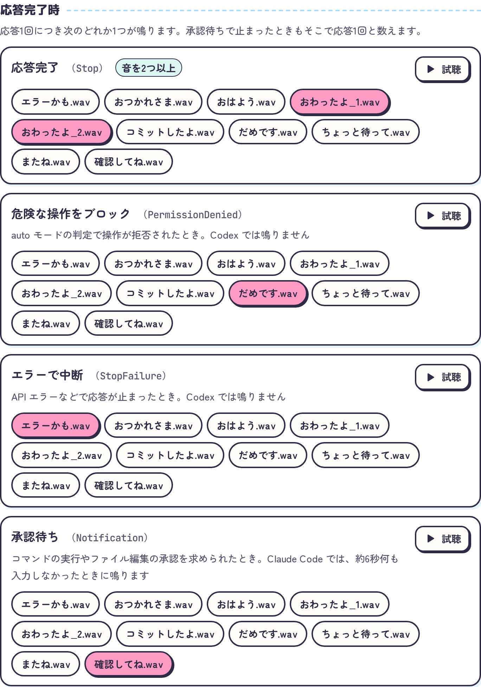
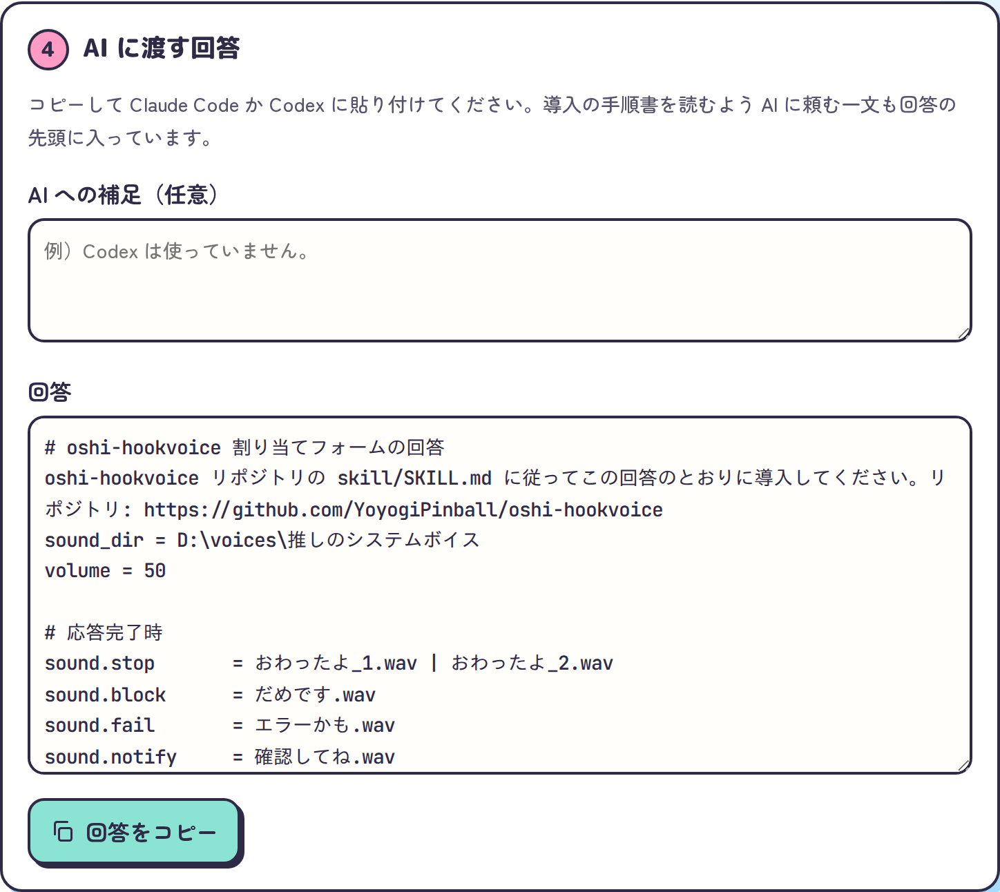

ソース公開 / 無料
oshi-hookvoice
Claude CodeやCodexの通知音を推しのシステムボイスにするスキルです。
鳴らす音を割り当てフォームで選択すると、設定はAIが行います。
- 種類
- Agent Skill / Webフォーム
- 対応
- Claude Code / Codex CLI
- 技術
- HTML / JavaScript / Bash / hooks

画面


応答完了や承認待ちなど、イベントごとに鳴らす音を選択できます。


コピーしてClaude CodeかCodexに貼り付けます。
できること
- 10種類のイベント
応答完了、承認待ち、コミット完了、セッション開始などで音を鳴らせます。
一覧にないイベントも追加できます。
- ランダム再生
1つのイベントに2つ以上の音を選択すると、鳴るたびにランダムで1つ鳴ります。
- 応答ごとに1回
応答完了、ブロック、エラー、承認待ちは、応答の終わり方に応じてどれか1つのみ鳴ります。
- 設定はAIが担当
hookの設定と再生スクリプトの配置は、回答を受け取ったAIが環境に合わせて行います。
- 自作hookとの連携
危険なコマンドを止める自作のhookからも、ブロックの音を鳴らせます。